豆粕:
2301: （70 + 90 + -130）+（-210 + 140 + 20）+ 20 + （10+-170） = -160
2303: 100 + 80 = 180
合计 = 20
m2301
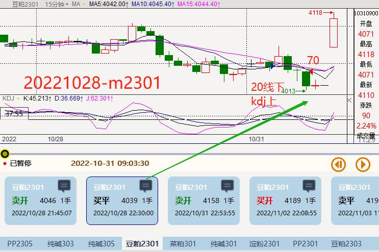
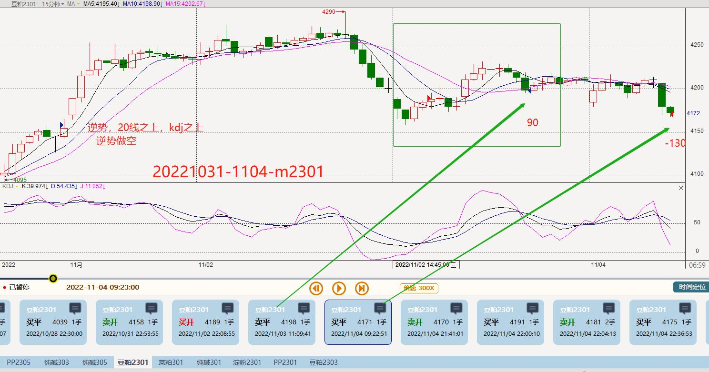
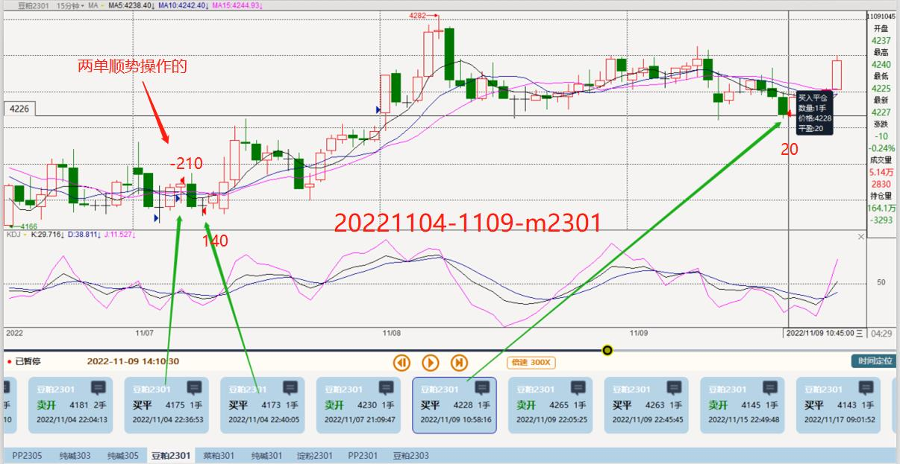
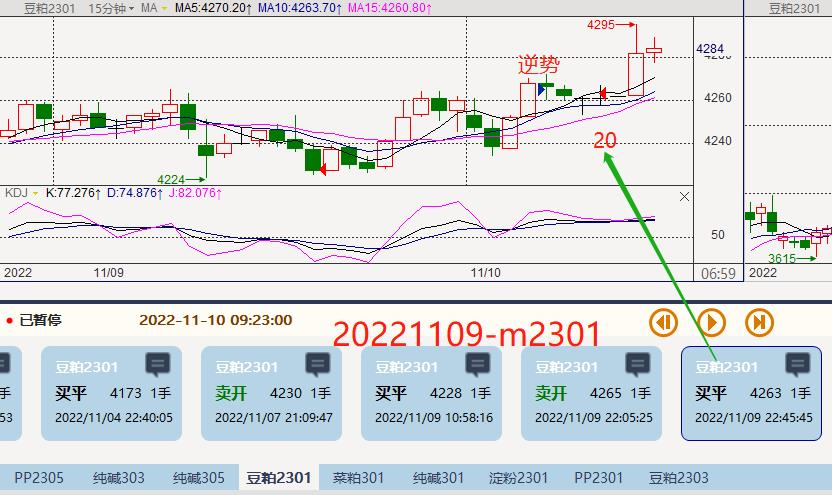
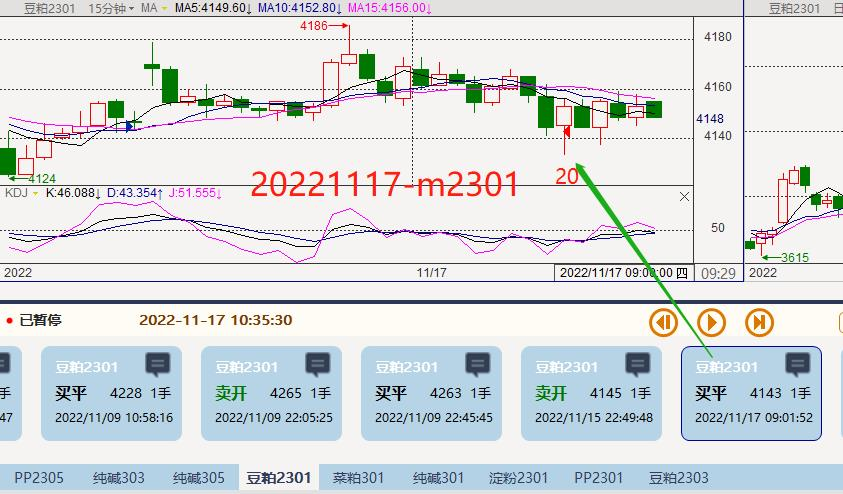
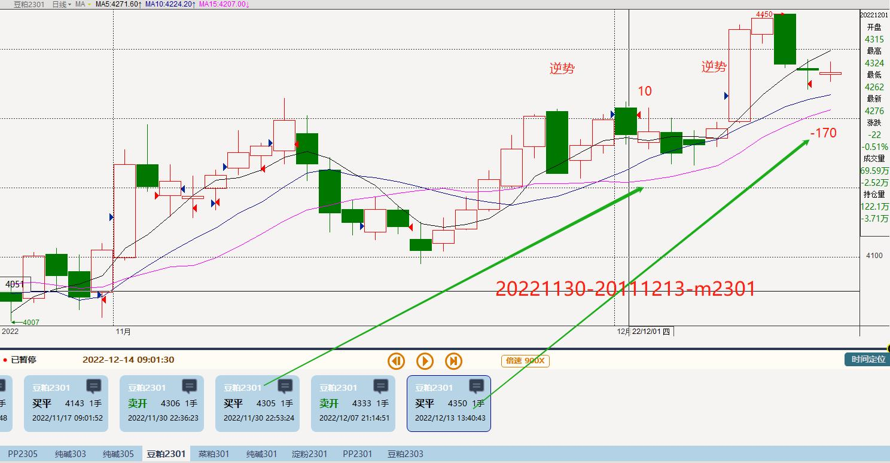
m2303
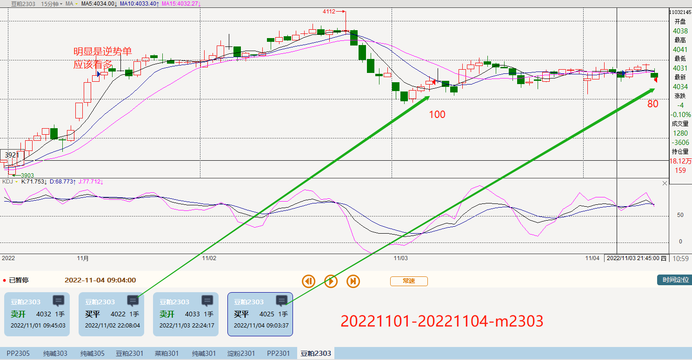
淀粉:
cs2301: 0 + 10 + 10
合计 = 20
cs2301
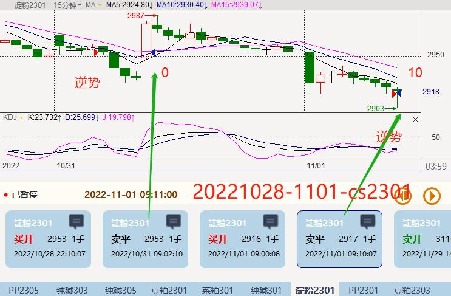
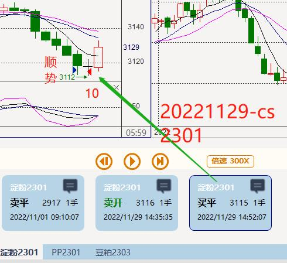
菜粕:
rm2301: (10+300) + 20 + (300+20) +
合计 = 650
rm2301
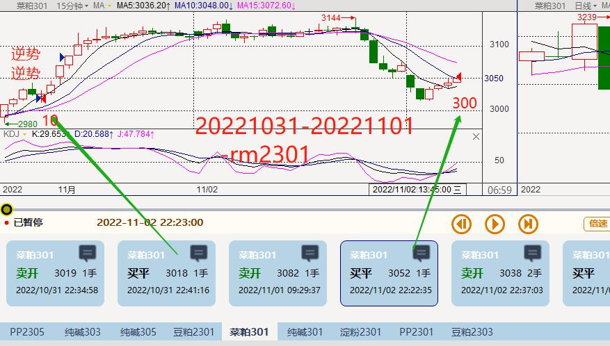
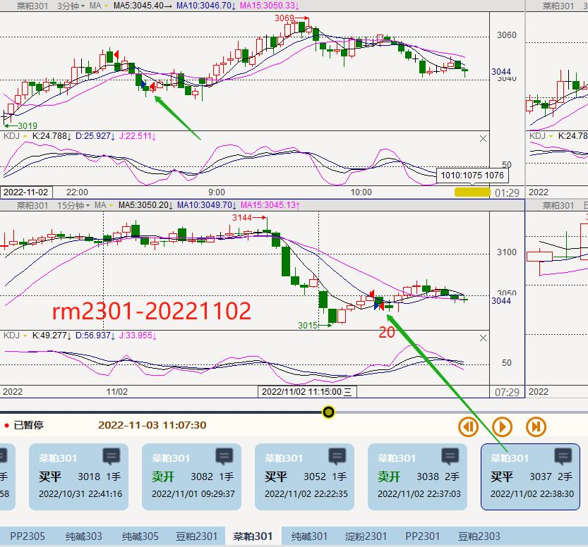
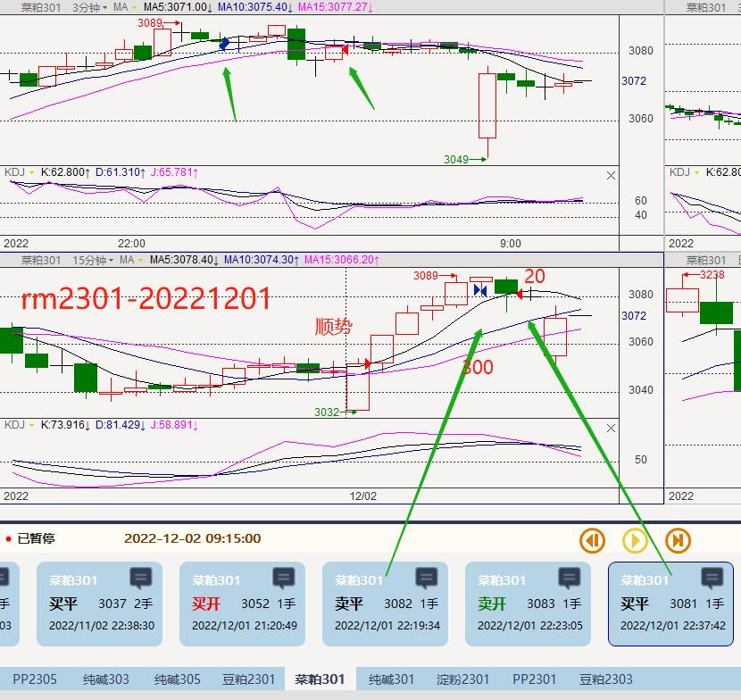
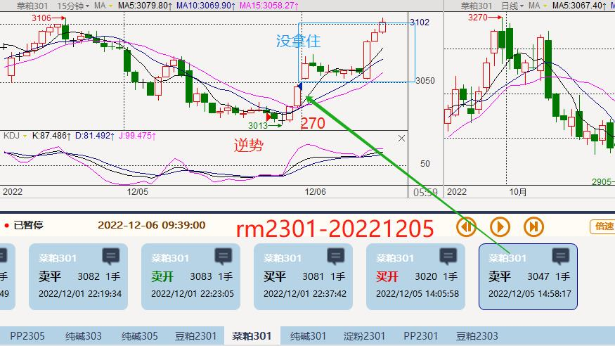
总计：-36600+20+20+185+650 = -35725
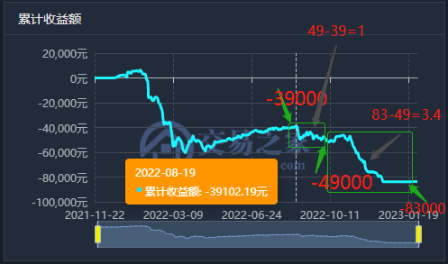
 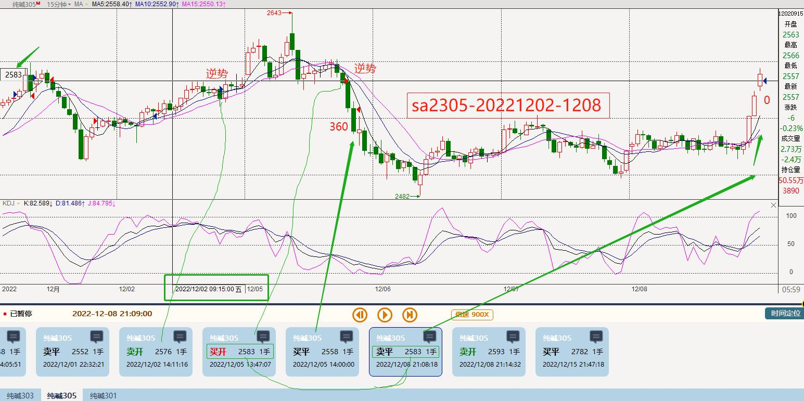
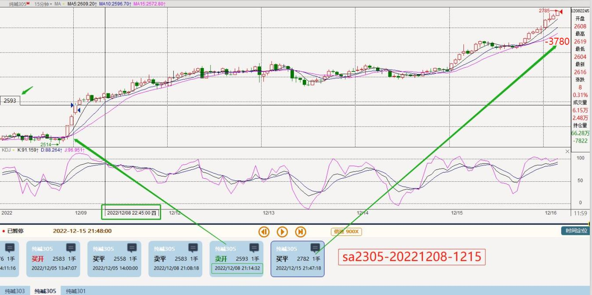
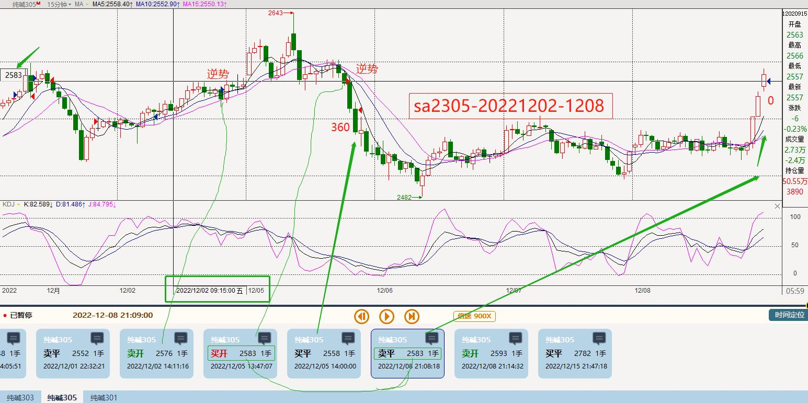
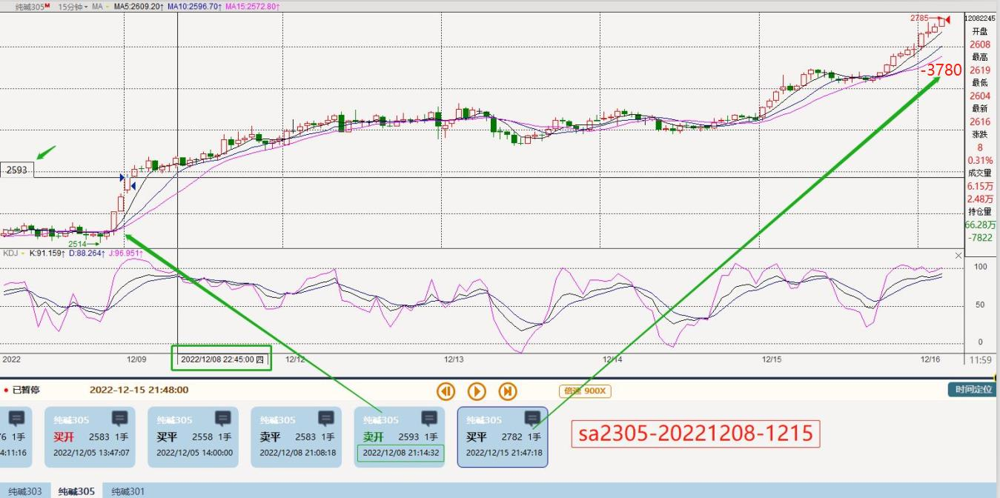